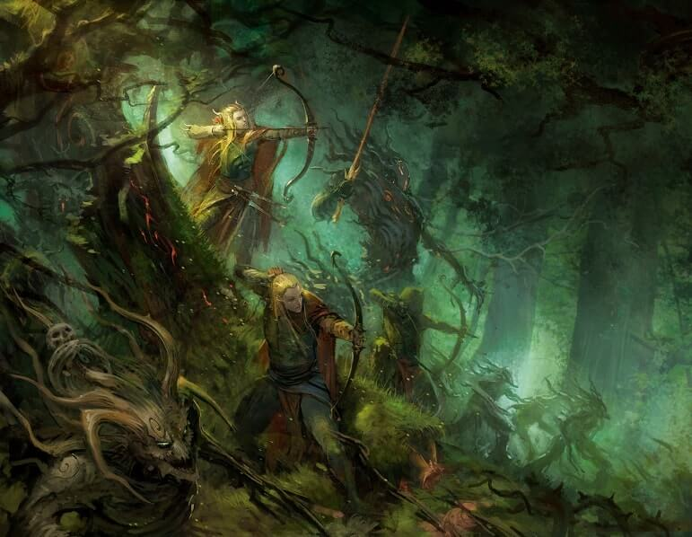
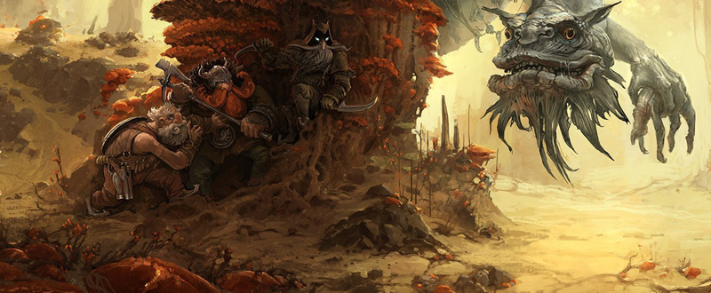
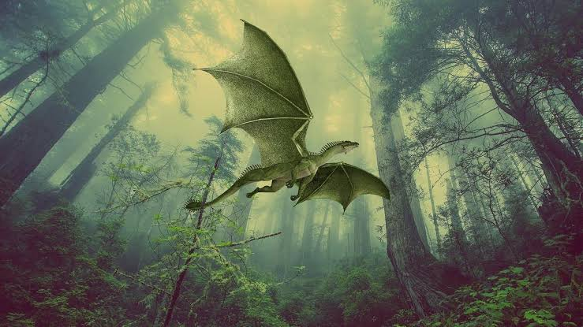
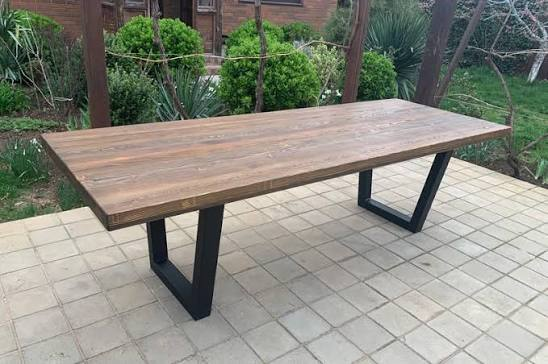

Эльфы
В лесах появляются поселения эльфов. Они живут среди древних деревьев, отлично владеют луком и стараются не вмешиваться в жизнь людей без необходимости.
— Мир становится богаче не тогда, когда в нём больше порядка, а когда в нём находится место и дракону, и эльфу, и говорящему столу.»

В лесах появляются поселения эльфов. Они живут среди древних деревьев, отлично владеют луком и стараются не вмешиваться в жизнь людей без необходимости.

В горах возникают города дворфов. Они строят огромные подземные поселения, занимаются кузнечным делом и постепенно начинают торговать с людьми.

В горах и лесах появляются драконы. Они устраивают логова вдали от городов, охраняют свои территории и лишь изредка вступают в контакт с людьми.

В домах начинают появляться говорящие столы. Они способны поддерживать разговор, давать советы и комментировать происходящее вокруг, даже когда их об этом никто не просит.
Каждую пятницу всем по пицце (только для людей). Для получения помолитесь создателю
Каждый человек имеет шанс стать избранным и получить свой стенд со способностями от создателя